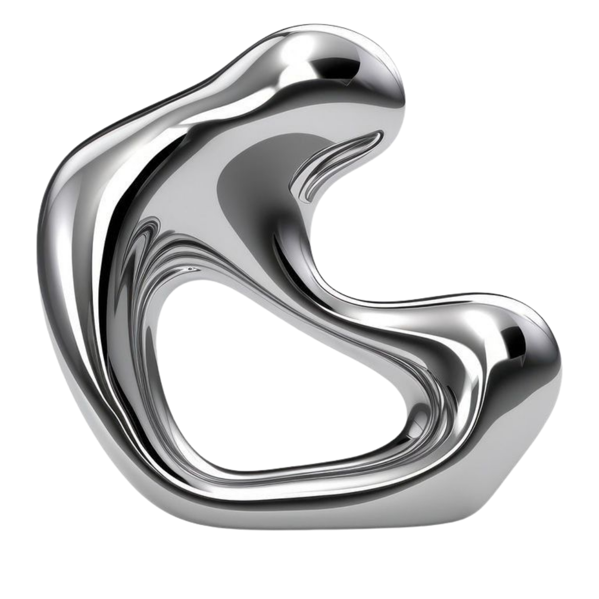
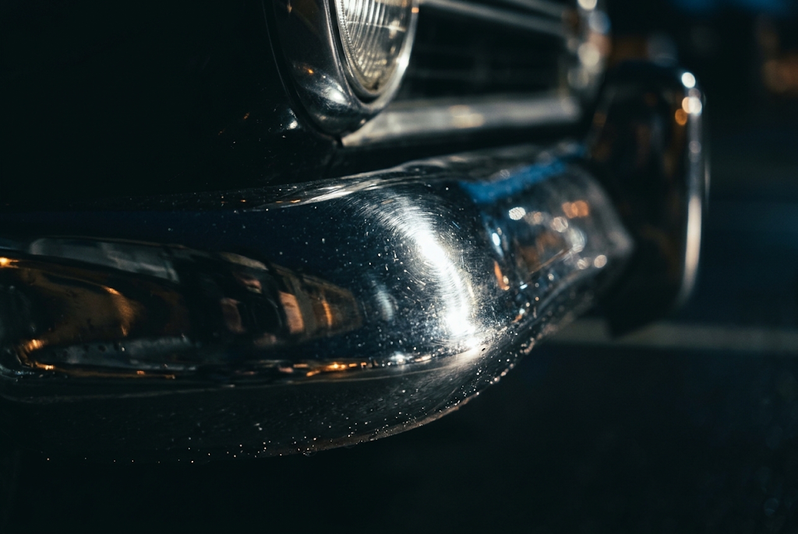

Elaine
Química / PAM


O elemento cromo foi descoberto em 1797 pelo químico francês Louis-Nicolas Vauquelin. A descoberta ocorreu enquanto analisava o "chumbo vermelho da Sibéria" (crocoíta).
Ao tratar o mineral com ácido clorídrico, isolou o óxido de cromo. O nome "Cromo" deriva do grego Chroma (cor), devido à grande variedade de cores vivas apresentadas pelos seus compostos.


O cromo é o 21º elemento mais abundante na crosta terrestre. Devido à sua reatividade, não é encontrado livre na natureza.
A principal fonte mineral para extração é a cromita (FeCr₂O₄). As maiores reservas mundiais estão na África do Sul, Cazaquistão, Índia e Turquia. No Brasil, os depósitos concentram-se na Bahia e no Amapá.

O cromo forma uma camada protetora microscópica que evita a oxidação do ferro em talheres e pias.

Peças automotivas recebem eletrodeposição de cromo para acabamento espelhado e proteção.
-oxide-sample.jpg?width=800)
Sais de cromo são empregados no tratamento do couro e o óxido na produção de pigmentos verdes.
Em quantidades reduzidas, é um nutriente essencial para o corpo humano. Auxilia a ação da insulina no controle dos níveis de açúcar no sangue e no metabolismo de gorduras. É encontrado em nozes, brócolis e cereais integrais.
Altamente tóxicos, oxidantes e carcinogênicos. A inalação sem EPI adequado causa lesões e câncer de pulmão.
O descarte incorreto afeta severamente a água e a vida aquática. Indústrias devem realizar neutralização química.
Química / PAM
PWII